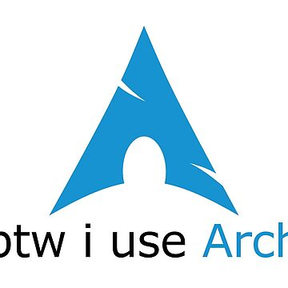

Arch Linux is known for its flexibility, and rolling-release model, where software is continuously updated instead of being delivered through major version releases. It follows a minimalist approach, providing a basic system that users customize to their own needs. Arch emphasizes user control and hands-on configuration, making it popular among experienced users who want a deeper understanding of their system. Software is managed through the Pacman package manager, and the community-maintained Arch User Repository (AUR) offers access to a vast range of additional packages.